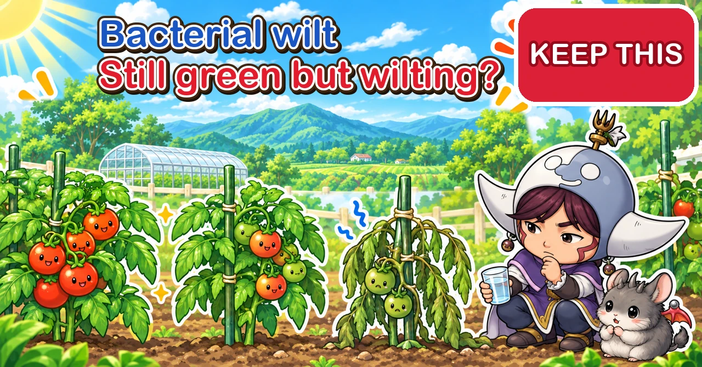
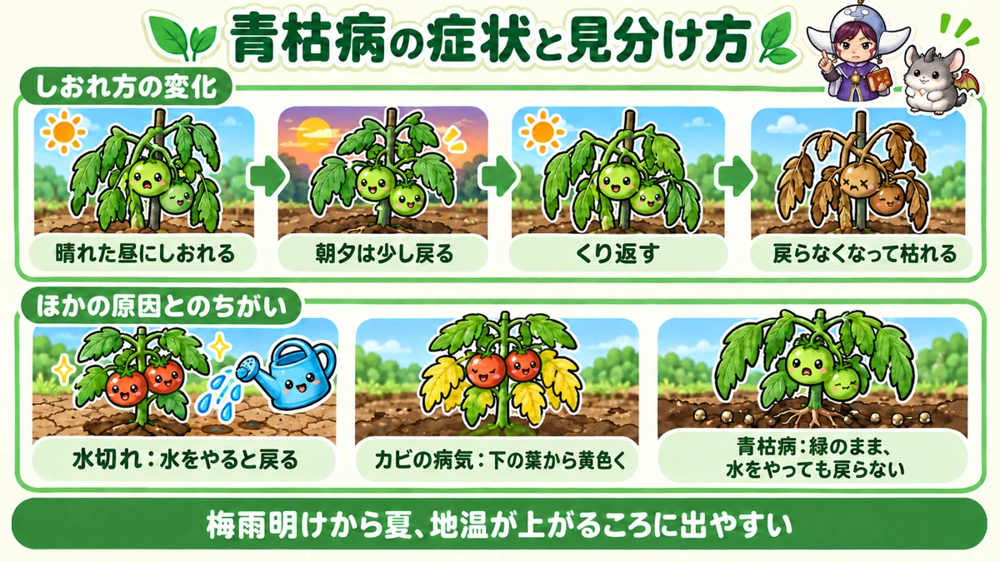

Bacterial wilt 🍅 How to recognise it and protect next year's crops

🍅 "My tomato was fine yesterday, but today it is limp while the leaves are still green."
🍅 "I watered and it recovered in the evening, then wilted again at midday."
🍅 "Is it drought, root damage or a disease—and should I pull the plant out?"
Hello, I'm Eiko. Eight years of growing vegetables organically and without pesticides, and a teaching licence in science.
Bacterial wilt is one of the most frustrating problems in a home vegetable garden. The plant may look healthy, then collapse in the heat while its leaves remain green. The bacterium lives in soil, enters through damaged roots and blocks the plant's water-conducting vessels. This article explains what to look for, how to check a stem in water, what to do when a plant is affected, and how to reduce the risk in the following year.
Where you are: the crops, seasonal timing and examples here are based on Japanese home gardens. The main season is the end of the rainy season through summer in central Japan; adjust it for your own climate. The advice is about recognising and reducing risk in a garden, not a laboratory diagnosis.
The essentials: green leaves that wilt suddenly in a sunny afternoon, recover a little in the morning or evening, then stop recovering are a warning. Watering does not cure bacterial wilt. If you decide a plant is infected, remove it with its roots on a dry day, bag it outside the plot, wash and disinfect tools, and improve drainage and crop rotation.
① Bacterial wilt at a glance
- Cause: bacteria living in the soil, commonly called the bacterial-wilt bacterium
- Common hosts: tomatoes, cherry tomatoes, aubergines, peppers, shishito peppers and potatoes; cucumbers, melons, radishes and other crops can also be affected
- Likely timing: the end of the rainy season and summer, when soil temperature rises
- Typical sign: the green plant suddenly wilts in a sunny afternoon, partly recovers in the morning, evening or cloudy weather, repeats the cycle, then fails to recover and dies
- Stem check: a cut stem placed in clear water may release a white, cloudy thread or stream
- If confirmed or strongly suspected: there is no way to cure the plant; remove it early and dispose of it outside the plot
- Next year: rotate plant families, improve drainage, choose a grafted plant with a rootstock specifically labelled resistant to bacterial wilt, and protect roots from damage

What this diagram says （図解の文字）
- Symptoms and how to tell bacterial wilt apart
- "Wilts in the sunny afternoon" ／ "Recovers a little in the morning and evening" ／ "Repeats" ／ "Stops recovering and dies"
- "Drought: recovers when watered" ／ "Fungal disease: lower leaves turn yellow" ／ "Bacterial wilt: stays green and does not recover when watered"
- "Often appears from the end of the rainy season into summer, as soil temperature rises"
② What the bacterium does
It begins in soil
This is not a disease that simply sits on a leaf. Bacteria in the soil enter through tiny wounds in a root. A root can be damaged by cultivation, an insect, a nematode or rough transplanting.
It blocks the water route
After entering, the bacteria multiply in the xylem—the pipes that carry water from roots to leaves. The pipes become blocked or damaged, so water cannot rise. The leaves can remain green because they have not first been starved of colour; they simply lose water and wilt. The Japanese name describes a plant that dies while still green.
It can remain deep in the ground
The bacteria are not restricted to the soil surface. They may be found from several tens of centimetres down and, in some places, around 1 m deep. Once a plot has had the problem, bacteria can remain for years and return when a susceptible plant is grown there again.
Water spreads it
The bacteria move with water through soil. Long wet weather followed by hot sunshine is a dangerous combination. From one plant, water and connected roots can carry them towards neighbouring plants and across a bed.
It is not limited to one family
Nightshades are frequent hosts, but bacterial wilt can also occur in cucumbers and melons, radishes and other crops. Do not watch only tomatoes and aubergines when a contaminated bed is being used.
③ Conditions that favour it
Warm soil
The bacterium becomes active as soil temperature rises above about 20°C and symptoms can advance rapidly around 25–30°C. This is why the end of the rainy season and summer are common times for trouble. Black plastic that raises soil temperature too far may add to the risk.
Long rain followed by sun
Rain leaves the soil wet, then clear weather warms it. Around the end of the rainy season, plants can suddenly wilt and the problem can spread quickly.
Poor drainage
Puddles after rain, soil that sets hard when it dries, and a high water table—such as in a field beside former paddies—give water and bacteria a route through the root zone.
Wounded roots
Deep hoeing close to a plant, cultivation that cuts roots, root-eating nematodes, chafer grubs and rough planting all make entry easier. Protecting the root system is part of disease prevention.
Deep roots meet deep bacteria
Tomatoes and aubergines send roots down as they mature. When roots reach deeper soil, they can meet bacteria below the surface. The first wilt may appear just as fruit starts to set and harvest begins.
Repeated planting
Growing tomatoes, aubergines, peppers or potatoes in the same soil year after year gives bacteria a succession of hosts. Rotation cannot clean a plot instantly, but it reduces the opportunity to multiply.
④ Read the pattern of wilting
- On a sunny afternoon the leaves suddenly droop while staying green.
- In the morning, evening or cloudy weather the plant may recover a little.
- Watering does not restore it, or only gives a short-lived impression of recovery.
- At first, just one branch may wilt.
- The cycle repeats for days or up to about two weeks, then the plant no longer recovers and dies.
A healthy plant can also wilt briefly in extreme heat. Check the soil and watch the same plant again at evening and the next day. Two or three days of the same daytime pattern is more concerning than one hot afternoon.
⑤ Check the stem in clear water
The test
Fill a clear glass with water. Cut the stem a little above soil level, but only on a plant you have decided to remove. Put the cut end down into the water and leave the glass still. Look from the side towards a bright background. If a white, cloudy haze or fine thread-like stream drifts from the cut into the water, bacterial wilt is highly likely. It is bacteria-rich fluid leaving the blocked water vessels.
Step by step
- Prepare a clear glass of water.
- Cut the stem just above the soil on the plant that will be removed.
- Put the cut end into the water without shaking the glass.
- View the cut from the side against a bright background.
- Look for white clouding or threads drifting into the water.
Cutting the stem means that plant cannot be saved. Treat the test as a clue that the plot may be contaminated, not as a way to postpone removal indefinitely. Wash the glass and thoroughly clean the scissors before they touch another plant.
Other clues
Dig gently around the base first. If white larvae are present and roots have been eaten, a root pest may be the main cause. A cut stem may also show brownish water vessels. Neither clue alone proves the diagnosis, so combine the stem test with the wilt pattern and soil condition.
⑥ Tell it from other causes
Drought
Dry soil below the surface, strong recovery within a few hours of watering, and a plant that is much better by evening suggest water shortage. Do not decide from one midday glance.
Root rot
Soil that stays wet, lower leaves turning yellow, and brown damaged roots point towards root rot. Improve drainage rather than flooding the plant again.
Root-eating pests
White grubs or other larvae around the roots, and a reduced root system, suggest an insect. Remove the pest while preparing the soil and avoid further root damage.
Bacterial wilt
Green leaves, daytime wilt that partly recovers in cooler light, no recovery after watering, and white threads from a cut stem together make bacterial wilt the stronger suspicion. A fungal wilt may instead start with yellowing lower leaves.

What this diagram says （図解の文字）
- Checking the stem and clearing an affected plant
- "1 Cut the stem" ／ "2 Put it in water and leave it still" ／ "3 White clouding means bacterial wilt"
- "Pull it out with the roots early" ／ "Put it in a bag and take it outside the plot" ／ "Wash scissors and hands"
- "Let water escape outside through a drain" ／ "An affected plant cannot be cured; preventing spread matters"
⑦ What to do when you see it
Check at the right time
From the end of the rainy season through summer, look once in the early afternoon, not only in the morning. Return at evening to see whether a wilted plant recovers. If drought is possible, feel the soil below the surface. Mark a suspicious plant and its neighbour, then inspect the same plants at midday the next day. After rain, look for water standing in beds and paths.
An infected plant will not recover
There is no treatment that restores a plant with bacterial wilt. Leaving it in place rarely gives a useful harvest and lets bacteria enter the soil around its roots.
Remove it early and gently
- Choose a dry day when the soil is slightly firm. Wet soil and rainwater carry bacteria more easily.
- Untie the plant from its stake. Insert a spade a little away from the stem and lift the root ball rather than pulling hard.
- Do not shake soil from the roots in the bed. Put the whole plant and attached soil directly into a bag.
- Pick up broken roots left in the hole and put them in the same bag.
- Before moving to another bed, wash soil from the spade, gloves and other tools with water.
Dispose of it outside the plot
Seal the bag and put the plant out as waste according to local rules. Do not leave it in the garden or add it to compost; bacteria can survive in the plant and soil and return where the compost is used. Keep soil attached to the roots from falling on the plot.
Clean scissors and hands
Scissors that cut a diseased plant can carry bacteria to a healthy plant. Wash, dry and disinfect tools after the affected plant. Do that work last, then do not touch healthy plants. Pinch side shoots by hand where possible, because it removes one route of transmission through shared blades.
⑧ Protect the remaining plants this season
Give water a way out
Cut or deepen paths and drains to improve drainage around healthy plants. A raised bed can help, but only if the drain has somewhere to discharge. Shape the drain gradually downhill towards the lowest edge of the plot and outside it; otherwise water simply seeps back into the bed. Check where water collects after rain and correct that point.
Watch the rest of the bed
After one plant shows symptoms, inspect the others around midday every day for a while. Use your hands rather than scissors for side-shoot removal, and wash your hands after touching the affected plant. Harvest fruit on healthy plants a little early so it is not wasted if those plants later wilt.
Do not replant the same family in the gap
Do not replace the removed tomato, aubergine or pepper with another nightshade in the same hole. The bacteria may still be in the soil and roots.
⑨ Prevention for next year
1. Rotate the plant family
Where bacterial wilt occurred, leave tomatoes, aubergines, peppers, shishito peppers and potatoes out for several years if possible. There is no single safe number of years for every soil, but a gap of at least several years is more cautious than planting the same family straight away.
2. Use the right grafted plant
A grafted transplant joins the desired crop onto the roots of a different, stronger rootstock. Choose one whose label specifically says it is resistant to bacterial wilt. Grafted plants cost more, but in a plot with a repeated problem they can be the most dependable option. “Grafted” alone does not guarantee resistance: a rootstock resistant to a leaf disease may not resist bacterial wilt.
Plant the graft union above soil. If the scion above the union makes roots that touch the soil, the plant may bypass the resistant rootstock. Check the label and plant shallowly enough to keep the union clear.
3. Improve drainage
Mix plenty of compost into the soil, cultivate deeply before planting, build a higher bed and cut paths or drains. The aim is for rainwater to leave the root zone rather than sit beside it.
4. Protect roots
Keep the root ball intact at transplanting. Do not dig deeply right beside a plant when earthing up or cultivating. Remove white chafer grubs and other root-eating pests found while preparing the soil; nematodes and grubs make entry wounds.
5. Do not overheat the soil
In the hottest part of summer, black plastic can push soil temperature too high. White-and-black or silver film warms less, and straw or cut grass around the plant base moderates soil temperature. Keep straw a little away from the stem. It also reduces soil splash onto leaves and stems.
6. Water calmly and feed moderately
Water slowly at the base rather than gouging soil around the roots. Avoid keeping the soil permanently wet with large daily waterings; wait for the surface to dry, then water thoroughly. Too much fertiliser, especially nitrogen, produces soft growth that is more vulnerable, so follow the packet rate.
7. Change the growing place
If the same spot produces bacterial wilt repeatedly, stop growing nightshades there and use another area. A different location is sometimes more reliable than trying to clean heavily contaminated ground.

What this diagram says （図解の文字）
- Prevention next year
- "1 Do not grow the same family repeatedly" ／ "2 Use a grafted rootstock resistant to bacterial wilt" ／ "3 Improve drainage"
- "4 Do not damage roots" ／ "5 Do not raise soil temperature too far" ／ "6 Solarise the soil in summer"
- "Planting alliums and combining several measures reduces it little by little"
⑩ Solar heat treatment and alliums
Solarising the soil
In hot summer weather, cultivate the bed, water it thoroughly and cover it tightly with clear plastic for several weeks. The sun warms the upper soil and can reduce pathogens and weed seed. Mixing rice bran into the soil before covering is another method used in home gardens.
- Remove the affected plant and collect visible roots.
- Dig the bed and make a trench about the depth a spade can reach.
- Scatter rice bran in the trench until the soil surface is lightly hidden; there is no fixed amount.
- Return the soil and water it thoroughly so the ground is wet right through.
- Cover the bed closely with clear plastic, burying or weighting the edges so wind cannot lift it.
- Leave it for several weeks during a run of hot, sunny midsummer days.
The best window is after the rainy season, when clear, hot weather is likely. Cloud and rain may leave the soil too cool. When the film comes off, avoid deep cultivation that brings cooler deep soil to the surface; use the warmed upper layer.
Solar heat reaches only near the surface, while bacterial wilt can remain deep, so it is difficult to eliminate every bacterium. Use solarisation as one part of a longer plan.
A garlic, onion or garlic-chive crop
Alliums such as garlic and onions are sometimes planted after bacterial wilt because microorganisms around their roots are thought to reduce pathogens. Some gardeners plant garlic chives alongside tomato or aubergine roots. These approaches are not guaranteed cures, but they can be combined with rotation and drainage.
For a garlic-chive companion planting, place a garlic-chive clump and the tomato or aubergine transplant together so their roots can intermingle. Garlic chives grown from seed take time to become large, so a spring plant or a divided established clump is easier. Keep the graft union above soil and treat the companion planting as supplementary.
Soil disinfectants
There are chemical soil treatments, but many require careful handling and may not reach deep bacteria. In a home plot, rotation, a resistant grafted plant and good drainage are more practical first measures.
⑪ Crop-by-crop watch points
Tomatoes and cherry tomatoes
They are among the commonest hosts. Watch from the end of the rainy season through summer, especially as fruit begins to colour. In a plot that has had repeated wilt, consider switching to a resistant grafted plant. Pinch side shoots by hand.
Aubergines
Aubergines are also vulnerable. One branch can wilt first, so inspect the plant at midday rather than judging the whole plant at once.
Peppers and shishito peppers
Symptoms can begin in the latter part of the rainy season. Compare the plant a few hours after watering and inspect the stem before deciding whether heat stress or bacterial wilt is responsible.
Potatoes
Potatoes are nightshades, so do not plant them where tomatoes or aubergines have repeatedly suffered. Rotate the whole family, not just the crop with the most obvious symptoms.
Cucumbers, melons and radishes
They are less frequent hosts than nightshades but can be affected. Their roots are often shallower, so they may meet fewer deep bacteria, but watch them in a contaminated plot.
Ginger
Ginger can also develop bacterial wilt. A plant that stays green while suddenly collapsing in summer is suspicious. Starting with disease-free seed ginger is an important precaution.
⑫ If the soil is contaminated
Keep a map
Draw a simple map of the plot and record each bed, crop, planting date and place where wilt occurred. Look at it the following spring before choosing where nightshades will go.
Use a container
If there is no suitable bed left, grow tomatoes or aubergines in a large pot with new commercial potting mix. Do not mix field soil into it. Raise the pot on blocks rather than standing it directly on contaminated ground, which reduces splash and water contact.
Reduce it over several seasons
Deep bacteria cannot be removed in one year. Avoid the host family, improve drainage, grow alliums, and solarise where practical. Repeating several modest measures gradually is more realistic than expecting one treatment to clean the plot.
⑬ A checklist before planting
Before planting tomatoes or aubergines in spring, check:
- Is this a place where bacterial wilt appeared last year?
- Was a nightshade grown here last year?
- Does water stand here after rain?
- Does the path drain connect to an outlet outside the plot?
- If the risk is high, does the transplant label specifically say bacterial-wilt-resistant rootstock?
- Did root-eating grubs appear when the soil was cultivated?
- Are you following the fertiliser packet rate?
If many answers are unfavourable, use that area for another crop and move nightshades elsewhere.
⑭ The seasons in central Japan
- February–April: choose the planting place, avoid last year's wilt spot, select a resistant grafted plant, add compost, cultivate deeply and make a raised bed.
- May–June: transplant without breaking the root ball and cut paths or drains before the rainy season.
- June–August: watch daytime wilting as soil warms; check suspicious stems and remove plants early.
- July–August: after clearing a wilted crop, solarise the bed where conditions allow.
- September–November: grow garlic, onions or other alliums in the affected area rather than another nightshade.
⑮ Where advice differs
Will a higher bed prevent it?
Better drainage can reduce water-borne spread, but a high bed is not a guarantee. Some heavily contaminated plots still show wilt even after the bed is raised. Treat high beds as one prevention measure among several, and make sure their drains actually discharge outside the plot.
How much do alliums reduce it?
There is an idea that allium roots change the microorganisms around them, and some gardeners report improvement. Others find that one year is not enough and several seasons are needed. Do not rely on alliums alone; combine them with rotation.
Black or white-and-black mulch?
Black mulch warms spring soil and helps new plants establish. In a hot summer it may raise soil temperature too far. Some gardeners switch to white-and-black film or lay straw over black film after the rainy season. The better choice depends on local weather and the plot.
Pull now or wait for coloured fruit?
It is tempting to leave a plant with nearly coloured fruit for a few more days. While it remains, bacteria can leave its roots and move towards neighbouring plants. Early removal usually protects the plot better. Pick large green fruit and let it ripen indoors if appropriate.
How high should the bed be?
There is no universal height. Judge by whether water remains after rain and whether the drain carries it outside. Drainage performance matters more than a particular measurement.
⑯ Common mistakes
Assuming drought and watering every day
Bacterial wilt does not recover because you add water. Permanently wet soil can help bacteria spread.
Leaving a wilted plant for “a little longer”
Bacteria can multiply in its roots and reach neighbouring plants. Remove a strong suspect early.
Using the same scissors on a healthy plant
Wash and disinfect tools, and do affected-plant work last.
Putting the plant into compost
Bacteria can survive and return with compost. Bag it and dispose of it outside the plot.
Planting another tomato in the same place
Soil bacteria remain. Rotate for several years or use another location and a labelled resistant graft.
Trusting any grafted plant
The rootstock must specifically be resistant to bacterial wilt; resistance to a different disease is not enough.
Burying the graft union
Roots from the scion can bypass the resistant rootstock. Keep the union above soil.
Raising a bed but ignoring its drain
Water with nowhere to go seeps back into the bed. Check the route after rain.
⑰ Questions
Can I eat fruit from an affected plant?
The fruit itself is not made poisonous by bacterial wilt, so fruit that has been harvested can be eaten if sound. The plant will usually die before all fruit ripens.
Can it spread to other vegetables in the bed?
It is common in nightshades, but cucumbers, strawberries, radishes and other crops are also reported hosts. Watch every crop in the bed for a while.
How many years should I wait?
Soil and climate differ, so there is no fixed number. Because bacteria can remain for years, leave at least several years where possible or use a labelled resistant graft in another place.
Can it occur in a container?
New commercial potting mix makes it less likely. Reused field soil or potting mix from an affected container can carry it. Do not reuse that mix.
Can a spray cure it?
There is no medicine that cures an infected plant. Soil disinfectants may not reach deep bacteria and need careful handling. Rotation, resistant grafts and drainage are the practical first line in a home garden.
Can I plant another crop immediately?
A crop that is not a common host can be used, especially alliums such as garlic, onions or garlic chives in autumn. Do not use another susceptible nightshade.
The next plant is wilting too
Remove the wilted plant, deepen the drain and harvest from healthy plants early. Neighbouring roots may be connected through wet soil.
Will a rain cover prevent it?
A roof reduces splash and some leaf diseases, but bacterial wilt begins in soil. A roof alone cannot prevent it; it only helps keep the bed from becoming excessively wet.
Does winter kill the bacteria?
Not necessarily. Bacteria can survive in deep soil or root fragments through winter, so remember the history of the bed even when preparing it in the cold season.
Are shop-bought transplants safe?
The soil is often the deciding factor. A healthy transplant can wilt when planted in contaminated soil. Choose the place as carefully as the plant.
🔬 The science: why the pattern looks so sudden
Why leaves stay green: many diseases yellow a leaf as its tissues are damaged. Bacterial wilt blocks the water pipe while the leaf can still hold its colour, so it collapses green.
Why it is worst at midday: sunshine makes leaves lose water quickly. A partly blocked water system cannot keep up. In morning, evening and cloudy weather, leaves lose less water, so the remaining open vessels can supply enough for a temporary recovery.
Why summer crops suffer: warm soil activates the bacterium while tomatoes and aubergines are making deep roots. They are then more likely to contact bacteria below the surface.
Why the stem test shows white threads: bacterial numbers are high inside the water vessels. When the stem is submerged, the contents flow from the cut into the glass and look cloudy or thread-like.
Why drainage matters: the bacterium is not good at travelling long distances on its own. It can be carried in soil water to the root zone and the next plant. A raised bed and an outlet reduce the opportunities for that movement.
Why root wounds matter: an intact root surface is a barrier. A cut root or an insect bite opens a door into the water-conducting tissue, so gentle cultivation and pest control reduce entry points.
Why it persists: bacteria can survive in soil and root fragments without a living crop, and may also use weeds or other hosts. Deep populations are difficult to reach by cultivation or surface solarisation, so a long, layered prevention plan is needed.
To sum up
- ✅ Bacterial wilt enters through roots and blocks water vessels, so leaves wilt green.
- ✅ It is common in tomatoes, aubergines, peppers and potatoes from the end of the rainy season into summer.
- ✅ Repeated midday wilting with slight morning or evening recovery, no response to water, and white threads from a cut stem are warning signs.
- ✅ Remove a suspect plant with its roots early on a dry day; bag it outside the plot, and wash and disinfect tools and hands.
- ✅ Improve drainage, protect roots, avoid excess nitrogen and keep water from sitting around the bed.
- ✅ Rotate plant families, choose a rootstock specifically labelled resistant to bacterial wilt, and keep the graft union above soil.
- ✅ Solarisation and alliums can be supplementary measures, but neither guarantees a clean plot.
Thank you for reading all the way to the end! If a tomato or aubergine wilts green in the afternoon, water once and check it again in the evening. If you have already decided to remove the plant, the clear-water stem test can provide a useful clue about the bed 🍅
Thank you for reading!